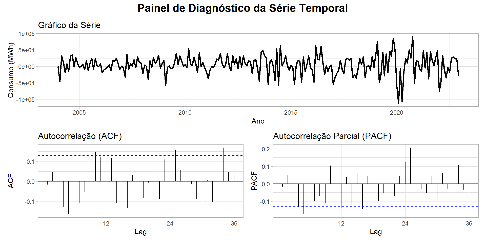

ME RMSE MAE MPE MAPE MASE
Training set 2256.726 26608.53 19550.13 0.2166755 2.290358 0.4268799
Test set 56980.434 68775.69 59854.76 4.8439823 5.115651 1.3069370
ACF1 Theil's U
Training set 0.06585039 NA
Test set 0.25875513 1.389201Análise da Série de Consumo de Energia Elétrica no Ceará
CC0308 - 2025 | Julho 2025
Slides:https://thalisreboucas.github.io/Analise-da-Serie-EPE-CE/#/
Thalis Rebouças
Sumário de aprendizagem
Resumo Geral
Motivo da Escolha da Série
Apresentação da Série
Estimação dos Modelos de Série Temporal
Método de Suavização Exponencial
Metodologia Box-Jenkins
Análise de Intervenções
Conclusão
Conclusão das análises e modelos
Referências
Vamos lá!
Motivo da Escolha da Série
Motivo da
Escolha da Série:
Qual série ?
\[Z_t = \text{Consumo Mensal de Energia Elétrica no Ceará (Sistema Simples) (2004-2025)}\]
Por que Análisar ?
Identificar padrões e tendências no consumo energético.
Apoiar políticas públicas para eficiência energética.
Entender como fatores como o cresimento da população e sazonalidade influenciam o consumo.
Apresentação da série.
Apresentação da série:
É uma série do EPE(Empresa de Pesquisa Energética) do Ministério de Minas e Energia (MME).
É um dado público disponível desde de 2004 de todos os estados e tipo de consumo neste link.
Neste caso, vou me restringir a análisar apenas o consumo do Ceará na parte de consumo de energia elétrica na rede (MWh) de Sistema Simples.
- É possivél entender melhor os dados e análises que o governo faz neste link.
Apresentação da série:
A série começa em janeiro de 2004 e vai até março de 2025,com isso tem cerca de 255 observações,vamos olhar o gráfico da série:

Apresentação da série:
Fazendo o gráfico box-plot separados por mês,quadrimestre e ano.

Percebemos um aumento nos últimos meses do ano e valores de outliers em alguns anos.
Divisão da Série:
Fazendo a divisão da série em teste e treino
Será feita um divisão na série em teste e treino, onde:
A série de treino vai até o final do ano de 2022
A série de teste começa do ano de 2023 até março de 2025
Assim sendo um divisão de 27 observações a serem prevista nos teste dos modelos
# A série começa em Janeiro de 2004
ts_ceara <- ts(ceara_data$consumo_gwh, start = c(2004, 1), frequency = 12)
# 2. Criar o conjunto de TREINO usando a função window()
treino <- window(ts_ceara, end = c(2022, 12))
# 3. Criar o conjunto de TESTE usando a função window()
teste <- window(ts_ceara, start = c(2023, 1), end = c(2025, 3))Método de Suavização Exponencial
Método de Suavização Exponencial
Passo a passo:
- A metodologia de suavização exponencial foi aplicada usando a função ets() do R.
Esta função testa diferentes combinações de componentes de Erro (E), Tendência (T) e Sazonalidade (S), selecionando o modelo que minimiza um critério de informação, como o AIC (Critério de Informação de Akaike).
O modelo é ajustado apenas com o conjunto de treino, será selecionado apenas o que tiver o melhor AIC definido pela a função do ETS() do R.
Método de Suavização Exponencial
Fazendo a utilização da chamada do modelo temos:
modelo_ets <- ets(treino)
- Que o melhor modelo sugerido foi o ETS(M,Ad,M)
| Componente | Tipo | Significado |
|---|---|---|
| Erro (E) | M: Multiplicativo | A variabilidade aumenta com o nível da série |
| Tendência (T) | Ad: Aditiva Damping | Tendência aditiva com amortecimento (freia ao longo do tempo) |
| Sazonalidade (S) | M: Multiplicativa | Sazonalidade proporcional ao nível da série |
Método de Suavização Exponencial
- Formula do Modelo:
\[\begin{align*} \textbf{Previsão:} \quad \hat{y}_{t+h} &= (l_t + \phi^h b_t) \cdot s_{t+h-m(k+1)} \\[1em] \textbf{Atualização do nível:} \quad l_t &= \alpha \cdot \frac{y_t}{s_{t-m}} + (1 - \alpha)(l_{t-1} + \phi b_{t-1}) \\[1em] \textbf{Atualização da tendência:} \quad b_t &= \beta \cdot (l_t - l_{t-1}) + (1 - \beta) \cdot \phi b_{t-1} \\[1em] \textbf{Atualização da sazonalidade:} \quad s_t &= \gamma \cdot \frac{y_t}{l_t} + (1 - \gamma) \cdot s_{t-m} \end{align*}\]
Método de Suavização Exponencial
summary(modelo_ets)
Modelo selecionado pelo melhor AIC
Alpha (nível): \(\alpha = 0,7001\)
Beta (tendência): \(\beta = 0,0038\)
Gamma (sazonalidade): \(\gamma = 0,0001\)
Damping: \(\phi = 0,9787\)
Nível inicial: \(l_0 = 506720,43\)
Tendência inicial: \(b_0 = 3288,48\)
Desvio Padrão dos erros: \(0,0313\)
AIC: \(5878,418\)
Sazonalidade inicial: \(s_1 = 1,033, \ldots, s_{12} = 1,0149\)
Método de Suavização Exponencial
Métricas de desempenho no conjunto de treino:
RMSE: 26.608,53
MAE: 19.550,13
MAPE: 2,29% ⇒ Erro percentual muito baixo
ACF dos resíduos: 0,066 ⇒ Baixa autocorrelação
Método de Suavização Exponencial
- Formula do modelo
\[\begin{align*} \hat{y}_{t+h} &= \left( 506720{,}43 + 0{,}9787^h \cdot 3288{,}48 \right) \cdot s_{t+h-12(k+1)} \\ l_t &= 0{,}7001 \cdot \frac{y_t}{s_{t-12}} + (1 - 0{,}7001)(l_{t-1} + 0{,}9787 \cdot b_{t-1}) \\ b_t &= 0{,}0038 \cdot (l_t - l_{t-1}) + (1 - 0{,}0038) \cdot 0{,}9787 \cdot b_{t-1} \\ s_t &= 0{,}0001 \cdot \frac{y_t}{l_t} + (1 - 0{,}0001) \cdot s_{t-12} \end{align*}\]
Método de Suavização Exponencial

Modelo quase ajustado
Captura tendência suavizada e sazonalidade proporcional fraca
Resíduos sem padrão aparente
Método de Suavização Exponencial
Método de Suavização Exponencial
- Acurácia do Modelo ETS no Conjunto de Teste
print(acuracia_ets)O modelo apresenta um desempenho ruim no conjunto de teste. Embora tenha se ajustado razoavelmente bem aos dados de treinamento, ele não conseguiu generalizar essa performance para os dados futuros (o conjunto de teste).
O modelo está superajustado (overfit) e tem um desempenho de previsão muito ruim, sendo inferior a um método de benchmark simples.
Metodologia Box-Jenkins
Metodologia Box-Jenkins
Uma abordagem sistemática para análise e previsão de Séries Temporais
Modelo Central: ARIMA(p, d, q)
O objetivo é encontrar o modelo que melhor se ajusta aos dados.
- AR (p): Autoregressivo
- Dependência dos valores passados da própria série.
- I (d): Integrado
- Número de diferenciações necessárias para tornar a série estacionária.
- MA (q): Média Móvel
- Dependência dos erros de previsão passados.
Metodologia Box-Jenkins
Processo Iterativo em 4 Etapas
- Identificação do Modelo
- Verificar e ajustar a estacionariedade da série (usando diferenciação
d). - Analisar gráficos de Autocorrelação (FAC) e Autocorrelação Parcial (FACP) para sugerir as ordens
peq.
- Verificar e ajustar a estacionariedade da série (usando diferenciação
- Estimação dos Parâmetros
- Calcular os coeficientes do modelo ARIMA(p, d, q) candidato.
- Verificação de Diagnóstico
- Analisar os resíduos do modelo: eles devem se comportar como ruído branco (aleatórios e sem padrão).
- Se o modelo for inadequado, retorna-se à Etapa 1.
- Previsão
- Com um modelo validado, utilizá-lo para prever valores futuros.
Pontos-Chave
- Guiado pelos Dados: A estrutura do modelo é definida pelos padrões encontrados nos próprios dados.
- Iterativo: É um ciclo de identificação, ajuste e verificação.
- Objetivo: Construir um modelo estatisticamente robusto para gerar previsões precisas.
Análises Primárias da série e Ajustes:
Podemos decompor a serie para ver a sazonalidade e estacionáridade,

Percebe-se um tendência práticamente linear cresente e uma série serrote, vamos olhar os lags para ver se tem tendência.
Análises Primárias da série e Ajustes:
adf.test(treino)
kpss.test(treino)
Augmented Dickey-Fuller Test
data: treino
Dickey-Fuller = -3.1698, Lag order = 6, p-value = 0.09388
alternative hypothesis: stationary
KPSS Test for Level Stationarity
data: treino
KPSS Level = 4.4547, Truncation lag parameter = 4, p-value = 0.01Com base nos resultados dos testes, a sua série temporal treino não é estacionária.
Ambos os testes, apesar de terem hipóteses opostas, apontam para a mesma conclusão.
Teste Augmented Dickey-Fuller (ADF)
O teste ADF busca evidências de que a série é estacionária.
- Hipótese Nula (\(H_0\)): A série não é estacionária (possui raiz unitária).
- Seu resultado: O p-valor foi de 0.09388.
Como o p-valor (0.09) é maior que o nível de significância padrão (0.05), você falha em rejeitar a hipótese nula. Isso significa que, segundo o teste ADF, a série é considerada não estacionária.
Teste KPSS
O teste KPSS, por outro lado, busca evidências de que a série não é estacionária.
- Hipótese Nula (\(H_0\)): A série é estacionária.
- Seu resultado: O p-valor foi de 0.01.
Como o p-valor (0.01) é menor que o nível de significância (0.05), você rejeita a hipótese nula. Isso significa que o teste KPSS também conclui que a série é não estacionária.
Conclusão Final
Ambos os testes confirmam que a s√©rie treino não √© estacionária. O pr√≥ximo passo na modelagem ARIMA seria aplicar a diferencia√ß√£o na s√©rie para tentar torná-la estacionária. üëç
Análises Primárias da série e Ajustes:
Análisando os lags da série:
gerar_diagnostico_ts(ts_ceara)Temos um forte evidência do modelo ser um autoregressivo de ordem 1 ou 2 e que a parte de médias móveis precisa tem um tratamento para aparecer, mesmo que no limte um sazonalidade no lag 12 ~ 14.
Análises Primárias da série e Ajustes:
Análisando os dados da Série da primeira diferança:
ts_diff= diff(ts_ceara)
gerar_diagnostico2_ts(ts_diff)
adf.test(ts_diff)
kpss.test(ts_diff)
Análises Primárias da série e Ajustes:
Principais Observações
Estacionariedade: A série se tornou estacionária após 1 diferenciação (
d=1).Sazonalidade Anual: Padrão sazonal muito forte, com “spikes” significativos nos lags 12 e 24 nos gráficos ACF e PACF.
- O spike claro no PACF no lag 12 sugere um componente AR Sazonal (P=1).
Componente Não-Sazonal: O PACF corta abruptamente após o lag 1.
- Isso sugere um componente AR(1) (p=1).
Análises Primárias da série e Ajustes:
Modelo Proposto Inicial: \(SARIMA(1, 1, 1)(1, 0,0)^{12}\)
| Componente | Ordem | Justificativa |
|---|---|---|
| p (AR Não-sazonal) | 1 | Corte no PACF no lag 1 |
| d (Diferenciação) | 1 | Aplicada para obter estacionariedade |
| q (MA Não-sazonal) | 1 | Ponto de partida simples |
| P (AR Sazonal) | 1 | Spike significativo no PACF no lag 12 |
| D (Dif. Sazonal) | 0 | Não parece necessária a primeira vista |
| Q (MA Sazonal) | 0 | Ponto de partida simples |
| s (Período Sazonal) | 12 | Padrão anual |
temos uma melhora da série e os testes de Dickey-Fuller e KPSS deu que a série é estacionaria.
Os testes de Dickey-Fuller e KPSS deu que a série é estacionaria.
Sugestão Modelo 1
A fórmula é:
\(SARIMA(1, 1, 1)(1, 0, 0)_{12}\)
Detalhamento dos Componentes
- SARIMA: Sigla para Seasonal AutoRegressive Integrated Moving Average.
- (p, d, q) = (1, 0, 1): Esta é a parte não sazonal do modelo.
p=1: Um termo autorregressivo (AR).d=0: Uma diferenciação regular para tornar a série estacionária.q=1: Nenhum termo de média móvel (MA).
- (P, D, Q)m = (1, 0, 0)m: Esta é a parte sazonal do modelo.
P=1: Um termo autorregressivo sazonal.D=0: Nenhuma diferenciação sazonal.Q=0: Nenhum termo de média móvel sazonal.m: Representa o período da sazonalidade (por exemplo,m=12para dados mensais).
Sugestão Modelo 1
Modelo1 <- Arima(treino, order = c(1, 1, 1), seasonal = c(1,0,0))
summary(Modelo1)Series: treino
ARIMA(1,1,1)(1,0,0)[12]
Coefficients:
ar1 ma1 sar1
0.7196 -0.8920 0.2938
s.e. 0.0688 0.0378 0.0687
sigma^2 = 885243577: log likelihood = -2659.45
AIC=5326.89 AICc=5327.07 BIC=5340.59
Training set error measures:
ME RMSE MAE MPE MAPE MASE ACF1
Training set 4622.065 29490.9 22057.06 0.5171221 2.607869 0.4816191 -0.01643013Sugestão Modelo 1
Equação Proposta 1: \[(1 - \phi_1 B)(1 - \Phi_1 B^{12})(1-B) Y_t = (1 + \Theta_1 B) a_t\]
Substiduindo os valores obtidos, temos:
\[ (1 - 0,7196 B)(1 - 0,2938B^{12})(1-B)Y_t = (1 -0.8920 B) a_t \]
Diagnóstico Modelo 1
Os gráficos indicam que os resíduos do modelo se comportam como ruído branco, sem autocorrelação, sugerindo um bom ajuste,mas que pode ser melhorado.
Sugestão de outro Modelo
Análises Primárias da série e Ajustes:
Análisando os dados da Série da primeira diferança normal e uma sazonal:
ts_diff_12 = diff(diff(ts_ceara),12)
gerar_diagnostico2_ts(ts_diff_12 )
adf.test(ts_diff_12)
kpss.test(ts_diff_12)Sugestão Modelo 2
A fórmula é:
\(SARIMA(1, 1, 1)(1, 1, 1)_{12}\)
Detalhamento dos Componentes
- SARIMA: Sigla para Seasonal AutoRegressive Integrated Moving Average.
- (p, d, q) = (1, 0, 1): Esta é a parte não sazonal do modelo.
p=1: Um termo autorregressivo (AR).d=1: Uma diferenciação regular para tornar a série estacionária.q=1: Uma termo de média móvel (MA).
- (P, D, Q)m = (1, 0, 0)m: Esta é a parte sazonal do modelo.
P=1: Um termo autorregressivo sazonal.D=1: Um diferenciação sazonal.Q=1: Um termo de média móvel sazonal.m: Representa o período da sazonalidade (por exemplo,m=12para dados mensais).
\[ (1 - \phi_1 B)(1 - \Phi_1 B^{12})(1-B)(1-B^{12}) Y_t = (1 + \theta_1 B)(1 + \Theta_1 B^{12}) a_t \]
Sugestão Modelo 2
Modelo2 <- Arima(treino, order = c(1, 1, 1), seasonal = c(1,1,1))
summary(Modelo2)Series: treino
ARIMA(1,1,1)(1,1,1)[12]
Coefficients:
ar1 ma1 sar1 sma1
0.6463 -0.9003 0.0834 -0.9975
s.e. 0.0744 0.0409 0.0738 0.2232
sigma^2 = 726899456: log likelihood = -2513.46
AIC=5036.91 AICc=5037.2 BIC=5053.76
Training set error measures:
ME RMSE MAE MPE MAPE MASE
Training set -895.7818 25936.48 18829.75 -0.1492058 2.178924 0.4111503
ACF1
Training set -0.02809811O modelo SARIMA(1,1,1)(1,1,1)[12] apresenta um excelente ajuste aos dados de treinamento, com resíduos que se comportam como ruído branco. No entanto, o modelo é ligeiramente mais complexo do que o necessário, pois um de seus coeficientes não é estatisticamente significativo, sugerindo que uma versão simplificada seria mais adequada (parcimoniosa)
Sugestão Modelo 2
Gráfico da Série: Os resíduos flutuam aleatoriamente em torno de zero, sem qualquer tendência ou padrão visível.
ACF e PACF: Os gráficos de autocorrelação e autocorrelação parcial mostram que praticamente todos os lags estão dentro dos limites de significância (linhas azuis). Isso indica que não há autocorrelação remanescente, um forte sinal de que os resíduos se comportam como ruído branco.
Sugestão Modelo 2
Assim esse é o Modelo sugerido ideal ao meu ver, \[(1 - 0.6463 B)(1 - 0.0834 B^{12})(1-B)(1-B^{12}) Y_t = \] \[(1 - 0.9003 B)(1 - 0.9975 B^{12}) a_t\]
Sugestão Modelo 2
Modelo Final
Sugestão Modelo Final
o Ajuste para um modelo final foi removido o termo não significativo sar1. O novo candidato, que deve ser o modelo final é o SARIMA(1,1,1)(0,1,1)[12]
Series: treino
ARIMA(1,1,1)(1,1,1)[12]
Coefficients:
ar1 ma1 sar1 sma1
0.6463 -0.9003 0.0834 -0.9975
s.e. 0.0744 0.0409 0.0738 0.2232
sigma^2 = 726899456: log likelihood = -2513.46
AIC=5036.91 AICc=5037.2 BIC=5053.76
Training set error measures:
ME RMSE MAE MPE MAPE MASE
Training set -895.7818 25936.48 18829.75 -0.1492058 2.178924 0.4111503
ACF1
Training set -0.02809811Sugestão Modelo Final
Sugestão Modelo Final
Este modelo SARIMA(1,1,1)(0,1,1)[12] é a versão otimizada e final. Ele é mais simples, todos os seus componentes são significativos, e ele se ajusta melhor aos dados segundo os critérios de informação. O próximo passo é usar este modelo para fazer previsões e avaliar seu desempenho no conjunto de teste.
\[ (1 - 0.6370 B)(1-B)(1-B^{12}) Y_t = (1 - 0.8923 B)(1 - 0.9166 B^{12}) a_t \]
Previsão Modelo final
Análise de Intervenções
detectAO(Modelo3)
detectIO(Modelo3)[1] "No AO detected" [,1]
ind 196.000000
lambda1 -4.841556Este resultado indica que o algoritmo de detecção de outliers encontrou um evento estatisticamente significativo na sua série temporal.
Evento Detectado: Um outlier significativo foi identificado no ponto de índice 196 da série .
Tipo de Outlier: A mensagem
"No AO detected"informa que não foram encontrados Outliers Aditivos (pontos isolados atípicos). Portanto, o outlier encontrado no índice 196 é de outro tipo, muito provavelmente uma Mudança de Nível (Level Shift - LS).Significância e Impacto: O valor
lambda1(-4.84) é a estatística-t do evento. Por ser um valor alto (em módulo), o outlier é altamente significativo. O sinal negativo indica que houve uma queda abrupta e permanente no nível médio da série a partir do ponto 196.
Em resumo: a análise sugere que algo mudou estruturalmente na série no 196º período que é maio de 2020, causando uma queda em seu patamar. Isso deve ser incorporado ao modelo final para melhorar a precisão das previsões.
Análise de Intervenções
Series: treino
Regression with ARIMA(1,1,1)(0,1,1)[12] errors
Coefficients:
ar1 ma1 sma1 xreg
0.6219 -0.8848 -0.9295 -64822.33
s.e. 0.0793 0.0447 0.1088 21815.90
sigma^2 = 734106319: log likelihood = -2509.59
AIC=5029.19 AICc=5029.47 BIC=5046.04
Training set error measures:
ME RMSE MAE MPE MAPE MASE
Training set -850.648 26064.73 19178.95 -0.1455986 2.219304 0.4187752
ACF1
Training set -0.02008813O modelo combina uma regressão linear com um modelo SARIMA (1,1,1)(0,1,1)[12] para capturar a dinâmica dos erros, o que é uma abordagem poderosa.
- Coeficientes Significativos: Todos os coeficientes, incluindo o da variável externa (
xreg), são estatisticamente significativos. Isso indica que a variávelxregcontribui de forma importante para a previsão. - Boa Acurácia: O erro percentual absoluto médio (MAPE) de 2.22% é geralmente considerado um bom nível de precisão.
- Resíduos Limpos: O valor de ACF1 (-0.02) é muito próximo de zero, sugerindo que não há autocorrelação remanescente nos resíduos. Isso é um forte indicativo de que a estrutura do modelo capturou bem os padrões dos dados.
Análise de Intervenções
Fazendo agora o Gráfico de Previsão com a Interveção colocada
Modelo Final
| Componente | Termo na Equação | Valor/Parâmetro Estimado | Descrição |
|---|---|---|---|
| Autorregressivo (AR) | (1 - 0.6219 B) |
φ₁ = 0.6219 |
Modela a dependência do valor atual com o do período anterior (memória de curto prazo). |
| Média Móvel (MA) | (1 - 0.8848 B) |
θ₁ = -0.8848 |
Modela a dependência do valor atual com o erro de previsão do período anterior. |
| Média Móvel Sazonal | (1 - 0.9295 B¹²) |
Θ₁ = -0.9295 |
Modela a dependência com o erro de previsão do mesmo mês no ano anterior. |
| Diferenciação | (1 - B)(1 - B¹²) |
N/A (Operadores) | Remove a tendência e a sazonalidade para tornar a série estacionária. |
| Efeito da Intervenção | -64822.33 * ... * P_t |
ω = -64822.33 |
O impacto imediato do evento, causando uma queda de ~64.8k unidades. |
| Erro Aleatório | a_t |
N/A (Variável) | Flutuações imprevisíveis restantes após a modelagem dos outros componentes. |
Modelo Final
Esta é a equação do modelo final com intervenção, com os valores estimados a partir dos dados.
O coeficiente -64822.33 (ω) representa o impacto imediato e pontual do evento de intervenção (no tempo \(T\)). Isso significa que, no momento em que ocorreu, o evento causou uma queda estimada de aproximadamente 64.822 unidades no nível da série.
Os outros coeficientes (ar1=0.6219, ma1=-0.8848, sma1=-0.9295) definem a “memória” da série, ou seja, como o efeito desse choque inicial e de outras flutuações aleatórias se dissipam e se propagam ao longo dos meses seguintes.
Conclusão das análises e modelos
Conclusão das análises e modelos
Avaliamos quatro modelos de duas famílias principais: ARIMA e ETS.
- Regressão com Erros ARIMA (Dinâmico)
Regression with ARIMA(1,1,1)(0,1,1)[12] errors- Inclui uma variável externa (
xreg) para melhorar a previsão.
- ARIMA Sazonal (SARIMA)
ARIMA(1,1,1)(0,1,1)[12]
- ARIMA Sazonal (Alternativo)
ARIMA(1,1,1)(1,0,0)[12]
- ETS (Suavização Exponencial)
ETS(M,Ad,M)- (Erro Multiplicativo, Tendência Aditiva Amortecida, Sazonalidade Multiplicativa)
Conclusão das análises e modelos
Qualidade do Ajuste vs. Complexidade
- AIC, AICc, BIC: Penalizam modelos complexos para evitar sobreajuste.
- Quanto menor, melhor.
Acurácia da Previsão (no treino)
- RMSE, MAE, MAPE: Medem o erro médio das previsões.
- Quanto menor, melhor.
Resultados: Qualidade do Ajuste
Comparamos os critérios de informação. Valores mais baixos indicam um melhor equilíbrio entre o ajuste do modelo e sua simplicidade.
| Modelo | AIC | BIC |
|---|---|---|
| Reg-ARIMA üèÜ | 5029.19 | 5046.04 |
| ARIMA (0,1,1)[12] | 5035.95 | 5049.43 |
| ARIMA (1,0,0)[12] | 5326.89 | 5340.59 |
| ETS(M,Ad,M) | 5878.42 | 5940.15 |
Conclusão: O modelo Regressão com Erros ARIMA se mostra superior, sugerindo que a variável externa (xreg) adiciona valor real.
Resultados: Acurácia da Previsão
Analisamos os erros de previsão no conjunto de dados de treino.
| Modelo | RMSE | MAE | MAPE (%) |
|---|---|---|---|
| Reg-ARIMA üèÜ | 26064.73 | 19178.95 | 2.22% |
| ARIMA (0,1,1)[12] | 26697.04 | 19381.64 | 2.24% |
| ARIMA (1,0,0)[12] | 29490.90 | 22057.06 | 2.61% |
| ETS(M,Ad,M) | 26608.53 | 19550.13 | 2.29% |
Conclusão: O Reg-ARIMA consistentemente produz os menores erros, confirmando sua maior precisão.
O Veredito: O Modelo Vencedor
O modelo Regressão com Erros ARIMA(1,1,1)(0,1,1)[12] é a escolha recomendada.
Por que ele venceu?
- ✅ Menores Critérios de Informação (AIC & BIC): Melhor equilíbrio entre ajuste e complexidade.
- ✅ Menores Erros de Previsão (RMSE & MAE): Previsões mais acuradas.
- ‚úÖ Poder Explicativo Adicional: A variável externa
xregé estatisticamente significativa e melhora o desempenho do modelo em relação a um ARIMA puro.
Referências Teóricas
Box, G. E. P., Jenkins, G. M., Reinsel, G. C., & Ljung, G. M., Time Series Analysis: Forecasting and Control (Wiley Series in Probability and Statistics), 5th Edition.
Brockwell, P. J., & Davis, R. A., Time Series: Theory and Methods (Springer Series in Statistics), 2nd Edition.
Hamilton, J. D., Time Series Analysis (Princeton University Press), 1st Edition.
Morettin, P. A., & Toloi, C. M. C., Séries Temporais em R: Análise e Previsão (Blucher), 1st Edition.
Shumway, R. H., & Stoffer, D. S., Time Series Analysis and Its Applications: With R Examples (Springer Texts in Statistics), 4th Edition.